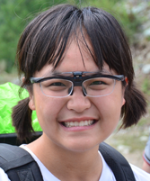

Past Graduate Students
|
HAN Yu (2009-2011)
M.S. Thesis: Genetic origin of wild tigers in Southeast and South Asia and its applications in wildlife forensics.
|
Past Undergraduate Students
|  |
ZHANG Mengqi (2011-2013)
PKU Undergraduate Research Project: Multiple genetic origins of coat color variations in domestic yaks (Bos grunniens)
|
|
ZOU ZhengTing (2011-2013)
B.S. Thesis: An estimation of the white tiger allele age based on genome data and population genetics
|
|
ZHANG Yue (2010-2012)
B.S. Thesis: Speciation and phylogeography of Southeast Asian mammalian species: A case study in Felidae
|
|
LIANG Peng (2011-2012)
B.S. Thesis: Genetic ancestry and evolution of wild tigers (Panthera tigris) in China
|
|
SONG Shiya (2010-2011)
PKU Undergraduate Research Project (Mao Yugang Foundation): Research on genetic diversity and conservation of Procapra przewalskii.
|
|
SONG Yuanfang (2011-2012)
B.S. Thesis: Proceedings in next-generation high-throughput sequencing technology and its applications in biodiversity research
|
|
ZHOU Xiaobo (2010)
B.S. Thesis: A preliminary analysis of the genetic ancestry of wild tigers (Panthera tigris) in China
|
|
LV Hai (2012)
B.S. Thesis: Proceedings in the research on the impact of global climate change on mammals
|
| |
WU Shen (2011)
B.S. Thesis: A review of studies on adaptive selection in mammalian mtDNA
|
<
top >
<
back>
Past Staff
|
NIE Lijia (2009-2011)
Administrative assistant and lab manager helping set up the Luo Lab during its earliest stage, after her official retirement from PKU in 2009.
|
 |
TIAN Yihua (2011-2014)
Administrative assistant from December 2011 to April 2014
|
Past Visiting Scholars
|
Julie Betsch (2010)
Ph.D. Candidate, University of Montana
Two months’ visit sponsored by US National Science Foundation East Asia & Pacific Summer Institutes for US Graduate Students Pursuing Science & Engineering
|
 |
Worata Klinsawat (2012-2014)
Ph.D. Candidate, University of Minnesota
Working on the effects of habitat fragmentation on patterns of genetic variation and temporal-scale changes of gene flow of large mammals including tiger (Panthera tigris), Asian elephant (Elephas maximus), guar (Bos gaurus), and banteng (Bos javanicus) in the Western Forest Complexes, Thailand.
|
<
top >
<
back>
|